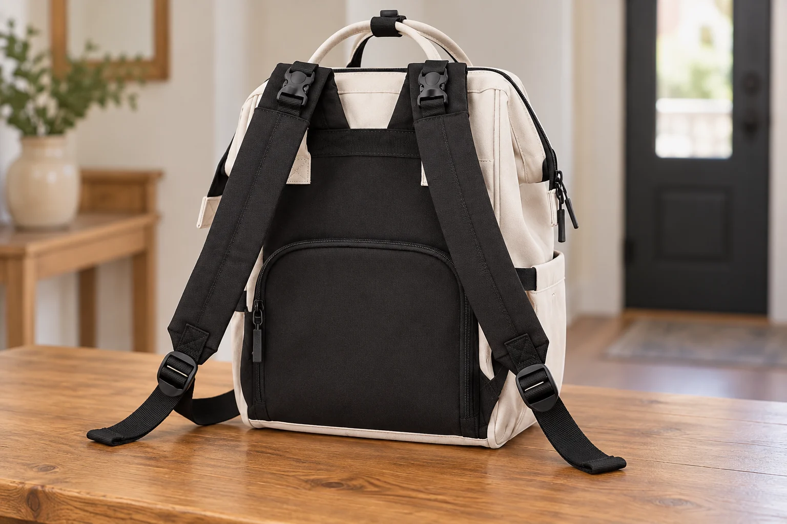
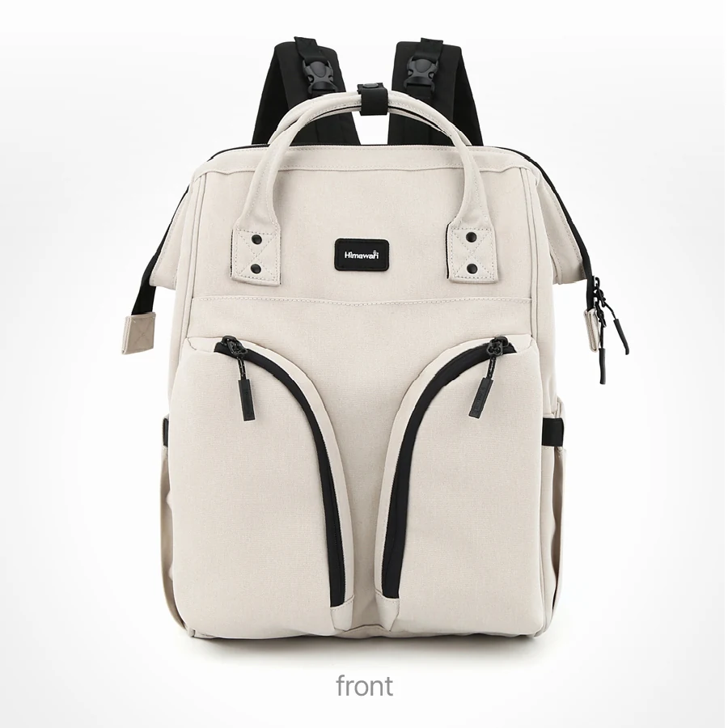
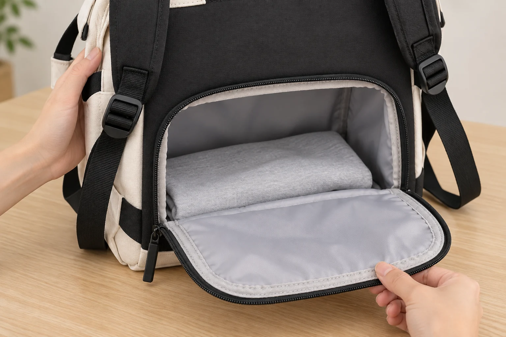

등판에도 큰 입구가 있는 백팩, 어느 쪽부터 열어야 할까

백팩은 위에서만 연다고 생각하기 쉽습니다. 그런데 제품 뒷면 사진에 넓은 지퍼 선이 보이면 질문이 달라집니다. 이 선은 작은 주머니의 입구일까요, 안쪽을 넓게 드러내는 개구부일까요. 어느 쪽인지에 따라 물건을 꺼낼 때 가방을 잡는 위치와 확인할 지퍼가 달라집니다. 앞모습이 비슷한 가방이라도 등판 사진을 따로 봐야 하는 이유입니다.
No.1208의 실제 상세 사진에는 위쪽을 넓게 펼친 장면과 ‘후면 와이드 오픈’으로 안내된 뒤쪽 개구부가 각각 있습니다. 뒤쪽 사진에서는 검은 등판 아래의 넓은 입구가 열려 있습니다. 아이보리 제품의 정면·측면·뒷면 사진과 함께 보면 상단 입구와 뒤쪽 지퍼의 위치를 구분할 수 있습니다. 이 글은 사진으로 확인한 두 개폐 위치와 손의 움직임을 설명합니다. 내부 통로의 정확한 연결 방식이나 개구부별 치수는 단정하지 않습니다.
꺼내기 전에, 지금 보고 있는 면부터 확인하기
예를 들어 책상 옆에 가방을 내려놓고 안쪽 물건 하나를 찾는 장면을 생각해 보세요. 손에 먼저 닿는 지퍼를 무조건 여는 대신, 가방의 앞면과 등판이 어느 쪽을 향하는지 살펴봅니다. No.1208의 아이보리 앞면에는 좌우로 굽은 검은 지퍼 선이 있고, 등판에는 검은 면 아래 넓은 지퍼 선이 있습니다. 색이 같아도 위치와 곡선이 다르므로 앞뒤 사진을 나란히 확인하면 혼동을 줄일 수 있습니다.
뒤쪽의 넓은 입구는 작은 휴대폰 포켓처럼 해석하지 않는 편이 좋습니다. 작은 뒷포켓이라면 손끝으로 제한된 공간을 확인하는 동작을 떠올리겠지만, 넓게 열리는 부분은 열리는 면과 그 앞의 공간까지 고려해야 합니다. 사진에서 큰 입구를 확인했다면 어디에 내용물이 닿아 있는지 보고, 패널이 움직일 여유를 확보한 뒤 여는 것이 자연스럽습니다. 폭이 넓어 보인다는 이유만으로 안의 물건이 모두 한 번에 보인다고 보장할 수는 없습니다.

등판 쪽을 열 때는 가방을 받치는 손이 필요합니다
등판이 몸 쪽에 붙어 있는 채로는 넓은 개구부 전체를 보기 어렵습니다. 이 장면에서 뒤로 손을 돌려 지퍼를 끝까지 여는 동작을 권하지 않습니다. 가방을 내려놓고 등판 쪽이 보이도록 방향을 바꾼 다음, 한 손으로 본체를 받치고 다른 손으로 지퍼를 움직여 보세요. 사진으로 확인하는 구조와 실제 손의 동선이 만나는 지점입니다. 받치는 면이 기울었거나 미끄럽다면 먼저 놓인 상태부터 바꾸어야 합니다.
넓은 패널은 열리는 동안 형태가 달라집니다. 처음부터 끝까지 한 번에 펼치기보다 조금 열어 안쪽의 상태를 보고 이어서 열 수 있습니다. 무엇이 패널 가까이에 있는지 모르는 상태라면 더 그렇습니다. 지퍼를 여는 힘만으로 내부 물건을 밀어내려 하지 말고, 걸린 부분이 없는지 눈으로 확인합니다. 여기서 필요한 것은 빠르게 여는 요령보다 열리는 면이 어디로 움직이는지 알고 다루는 순서입니다.
원본의 열린 뒤쪽 사진에는 여러 물건이 함께 배치되어 있습니다. 이 사진은 개구부가 열리는 모습을 확인하는 근거로 사용했습니다. 사진 속 물건과 크기가 비슷하다는 이유로 자신의 소품이 같은 위치에 들어간다고 판단하지는 마세요. 수납 가능한 크기와 무게는 별도 확인이 필요합니다. 아래 AI 사진의 천도 개폐 동작을 설명하기 위한 연출 소품으로, 구성품이나 수납 시험 결과가 아닙니다.

한쪽을 열었다면, 다른 쪽은 어떤 상태인가
위쪽과 뒤쪽을 차례로 보다가 양쪽을 모두 연 채로 두면, 들어 올릴 때 확인할 곳이 늘어납니다. 사용하려는 입구를 정하고 다른 쪽의 닫힘 상태를 먼저 확인하면 개폐 동작을 구분하기 쉽습니다. 위에서 내부를 살펴본 뒤 뒤쪽 사진처럼 펼쳐 보고 싶다면, 처음 열었던 위쪽을 닫고 가방을 받친 다음 방향을 바꾸는 식입니다. 두 입구를 동시에 열어야만 사용할 수 있는 구조라고 단정할 근거는 없습니다.
어느 쪽이 늘 먼저여야 한다는 정답도 없습니다. 위쪽에서 보이는 물건을 확인하는 상황과 등판 쪽의 개구부를 살펴보는 상황은 가방을 바라보는 방향이 다릅니다. 중요한 것은 보고 있는 입구와 조작하는 지퍼가 일치하는지입니다. 한쪽을 닫았다는 기억만으로 다른 쪽까지 닫혔다고 생각하지 않아야 합니다. 큰 입구가 하나 더 있다는 사실은 꺼내는 선택지와 함께 출발 전 확인할 위치도 하나 더 생긴다는 뜻입니다.
닫는 순서는 다시 메는 동작까지 이어집니다
내용물을 정리한 다음에는 패널의 가장자리를 먼저 맞춰 보세요. 안감이나 소품이 지퍼 길에 걸려 있으면 멈추고 위치를 바로잡습니다. 지퍼를 당겨 패널을 억지로 끌어올리기보다 열린 면이 본체와 맞닿은 상태에서 닫는 편이 진행 상황을 보기 쉽습니다. 끝까지 움직인 뒤에는 등판 아래 지퍼 선을 눈으로 따라 확인하고, 위쪽 입구도 별도로 살펴봅니다. 어깨끈을 잡는 일은 그 다음입니다.
가방을 메고 난 뒤에는 등판의 지퍼가 몸에 가려집니다. 그래서 이 구조는 “몸 뒤에 있으니 괜찮겠지”라고 넘기기보다 메기 전에 확인하는 습관과 맞습니다. 뒤쪽에 있다는 이유로 잠금장치나 방범 기능이 있다고 설명할 수는 없습니다. 또한 다른 백팩에서 볼 수 있는 작은 뒷포켓의 설명을 이 가방의 넓은 개구부에 그대로 적용하지 않는 편이 좋습니다. 서로 다른 부품의 설명을 한 지퍼에 모아 붙이면 실제 사용 동작도 헷갈립니다.
확인된 No.1208의 외부 크기는 가로 29 × 세로 40 × 폭 17cm이며 겉감·안감은 폴리에스터입니다. 이 수치가 뒤쪽 입구 자체의 크기는 아닙니다. 개구부 크기나 안쪽 연결 방식이 선택에 중요하다면 상세 사진과 제품 문의로 추가 확인하세요. 정면의 디자인을 고른 뒤 뒷면을 덧붙여 보는 데서 그치지 않고, 등판을 열고 닫아 다시 메기까지의 동작을 상상해 보는 것이 이 가방의 입구를 이해하는 방법입니다.